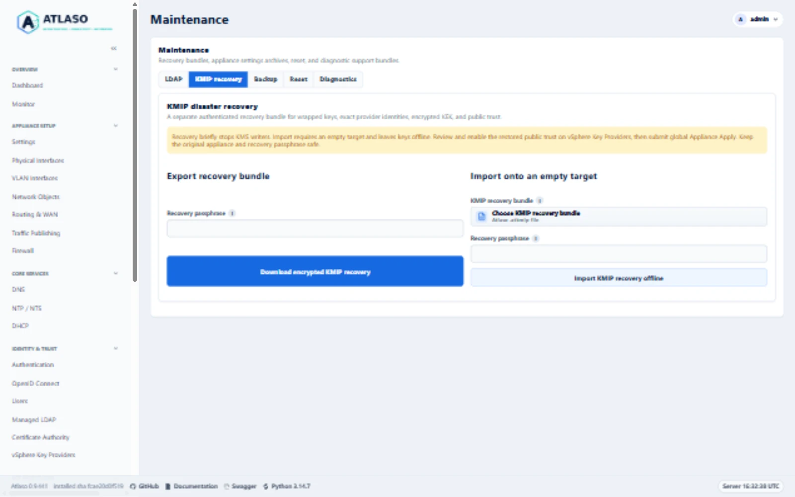
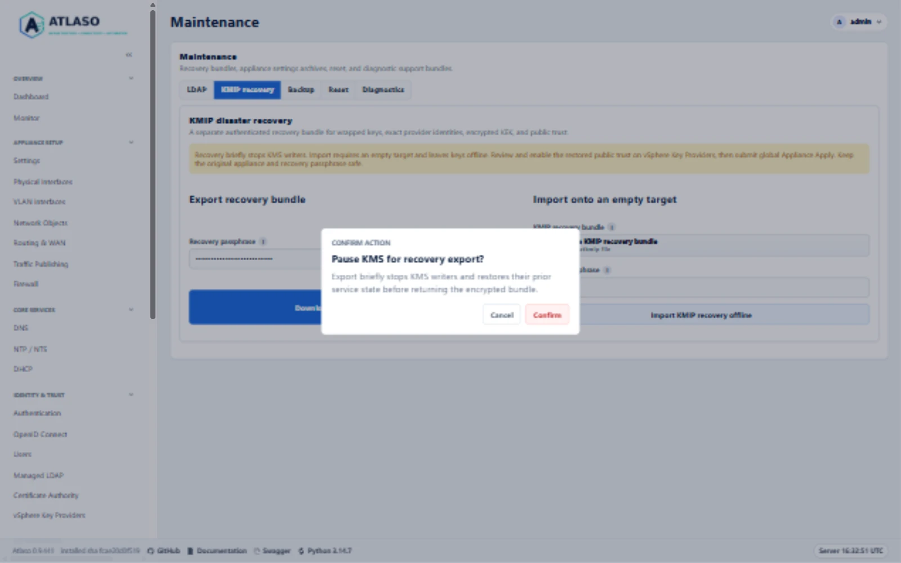
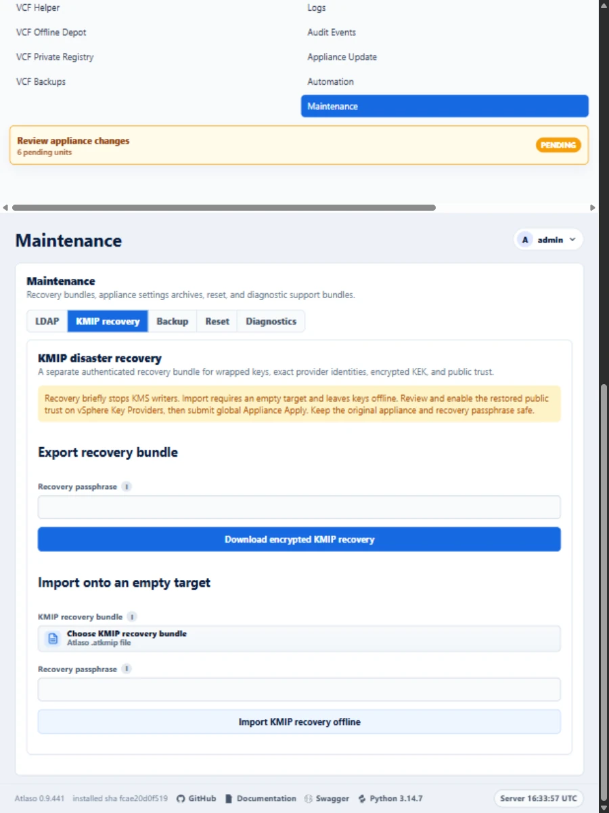

KMIP disaster recovery¶
Use Maintenance > KMIP recovery to preserve operational key custody separately from the settings archive. Keep the original appliance and its storage intact throughout recovery. Recovery is an experimental VCF 9.1 capability; the implemented archive contract does not establish an encrypted-workload support matrix.
Interface overview¶
This verified appliance view provides visual orientation before you begin.

Figure: KMIP recovery forms and empty-target guidance on the documentation appliance in the desktop viewport.
Before exporting¶
- Complete the existing provider and public-client trust configuration through global Appliance Apply.
- Arrange a maintenance window: export briefly stops both KMS writers and restores their previous service posture.
- Create a strong recovery passphrase in your organization's secret manager. Keep it separately from the bundle. Atlaso never retains the passphrase and cannot recover a lost one.
- Download a separate settings archive for appliance/network desired state. It does not contain operational keys.
Export an authenticated bundle¶
Open Maintenance > KMIP recovery, enter the recovery passphrase, and select Download encrypted KMIP recovery.
Confirm the service pause. Store the downloaded .atkmip file in protected backup storage.
The versioned bundle authenticates its complete contents using AES-256-GCM and a fixed-cost scrypt-derived key. It contains exact provider/key identifiers, wrapped-key ciphertext and authenticated metadata, the original encrypted KEK envelope, protected master custody, and public provider/vCenter/certificate relationships. No client private key is collected. No plaintext operational key is returned through the management UI or API.
An export succeeds only after the helper restores the prior KMS service state. A failure requires checking service health before retrying. Retain older verified bundles until the replacement has been independently tested. The management helper allows up to 30 minutes for the bounded operation and service restoration on a slow appliance. Wait for its result and service-health readback before retrying. A rejected archive releases its service checkpoint only after the prior service posture is verified and no pending recovery journal exists, so a corrected archive can be submitted. Uncertain restoration retains the checkpoint.
Restore onto an empty target¶
- Prepare a separate, clean appliance. Preserve the source appliance and every provider/key record. Do not reset or delete the source store to simulate appliance loss.
- Do not restore a full source-appliance settings archive as part of KMIP recovery, either before or after importing
the bundle. Ordinary settings archives include the public desired-state collections
vsphere_key_providers,vsphere_trusted_vcenters, andvsphere_trusted_vcenter_certificates, including public certificates. Settings restore replaces those collections; it does not restore or reconcile the operational keys in the KMIP bundle. The import requires an empty provider/trust target, and a later settings restore could replace the exact public relationship graph recovered from the bundle. Use the archive only as a reference while reconfiguring remaining desired state through supported workflows. - Establish only the prerequisites needed to reach the target and perform the offline import: configure management reachability through the appliance console or the supported networking workflow, and select a valid clock source through its supported workflow. Do not create provider, trusted vCenter, or trusted certificate rows. Preserve the mutually exclusive appliance clock-source rule: use either Atlaso's NTP client or VMware Tools, according to the supported time-source procedure.
- Open Maintenance > KMIP recovery. Select the
.atkmipbundle, enter its passphrase, and confirm Import KMIP recovery offline. Import authenticates and validates the complete candidate before publication. Nonempty native or legacy stores, wrong passphrases, corruption, unsupported schemas, duplicate identifiers or provider-scoped vCenter names, incomplete trust, and inconsistent KEK custody fail closed. Existing keys are never migrated or regenerated. - Imported provider and trusted-vCenter records are disabled. The provider applied baseline is cleared, and the listener remains offline. On vSphere Key Providers, review the restored provider UUIDs and exact public-client fingerprints against independent records. The imported public certificate rows remain as evidence; expired certificates do not become valid because of import. Then configure the target's CA-managed KMIP server identity and listener: enable the Certificate Authority, set the KMS hostname and selected listener interfaces, and enable only the reviewed original provider/vCenter relationships. Atlaso automatically issues the shared server certificate from its internal CA when KMS is enabled. These are desired-state changes; continue to the next step for Appliance Apply to deploy the identity and listener. See Certificate Authority and vSphere Key Providers for the supported settings and automatic server-identity behavior.
- Review and submit global Appliance Apply. The helper requires the original enabled provider/fingerprint graph and binds startup authorization to the exact installed configuration and imported store identity. It retains the pending journal through listener stability verification.
- Re-establish the server's public trust on vCenter as required by its KMS trust mode. Verify KMS connectivity and authenticated lifecycle evidence. Independently verify access to a workload encrypted before the export before retiring any original appliance or backup.
If a full settings archive has already been restored to the intended recovery target, preserve that target and its state. Do not delete providers or edit the database or archive to clear the import guard. Begin recovery on another clean appliance and follow this sequence.
The restore changes the target's wrapping-master custody to work with that target's appliance credential while preserving the original wrapped-key rows and encrypted KEK bytes. It does not require copying the source appliance's application secret.
Interrupted import and rollback¶
The root-owned /var/lib/atlaso-kmip-recovery anchor retains a durable pending journal, private candidate, and the
previous empty directory. Active publication uses an atomic rename that refuses to replace a concurrent entry.
A late write causes rejection and restoration of the prior directory; it never overwrites the late key.
A validation failure before the pending journal is published removes only the newly prepared candidate.
A published journal retains its candidate for retry, including when the journal flush reports an error.
Retry an interrupted import with the same bundle and passphrase. If operational publication completed but the application database transaction did not, that retry persists the public trust while retaining offline key custody. A different bundle, changed identity, ambiguous filesystem state, unresolved SQLite journal, or conflicting target requires maintainer reconciliation. Preserve the journal, candidate, and previous directory. Do not manually remove, rename, edit, or reconstruct store files to clear a gate. Do not expose their contents in logs or support reports.
An ordinary Apply failure uses the existing KMS cutover rollback procedure. An incomplete import remains offline; do not force-start it or replace its pending marker. Keep the original appliance available throughout recovery. Completion retires and flushes the service checkpoint before removing the pending gate. A failed retirement keeps the gate for a subsequent reviewed Apply retry. If the completion child fails or times out after it may have committed, Apply preserves the reviewed installed runtime and disables its listener instead of restoring an older configuration without a pending gate. Retry reviewed Apply to reconcile completion; a reported listener-shutdown failure requires immediate service reconciliation.
Complete Factory reset deliberately removes both active KMIP state and all retained recovery custody, including pending markers, checkpoints, private candidates, and previous directories. It does not preserve an appliance-local recovery copy. Verify an independently stored bundle before choosing reset; interrupted cleanup must resume through the existing protected reset workflow.
Legacy PyKMIP transition¶
Native startup, KMS Apply, and candidate release admission require read-only legacy emptiness evidence. Atlaso checks
the configured database and retained files under /var/lib/atlaso/kms, including unresolved journals. Missing configured
files, corrupt databases, unknown retained material, or any application row block replacement unchanged.
A nonempty legacy store requires a new appliance and VMware-supported rekeying. There is no in-place key migration, regeneration, forced admission, or supported procedure for manually clearing the store.
For a demonstrably empty legacy store, stop the old listener through the appliance's supported systemd service procedure before release admission. KMS Apply captures the prior service posture, stops the old writer, and repeats the emptiness proof immediately before admitting the replacement. A failed cutover restores the prior service state. Disabled Apply also requires the old writer already stopped; it must not discard an active legacy listener.
API and evidence¶
Both API operations require write:kms:
POST /api/v1/vsphere-key-providers/recovery/exportaccepts a request-bound passphrase and returns encrypted binary.POST /api/v1/vsphere-key-providers/recovery/importaccepts the passphrase and base64-encoded encrypted archive and returnspending-trust-review. Review and global Apply remain required.
The decoded bundle limit is 32 MiB. Successful exports disable caching. Audits contain only operation/status context, never passphrases, master custody, wrapped-key bodies, or decrypted operational keys.
For issue #172, the maintainer explicitly waived agent-run ESXi encrypted workload tests and will perform them separately in production. This waives that agent-delivery gate only. No production access, deployment, mutation, or workload test is authorized for the agent. Encrypted-VM, vSAN, and restored-workload access are not reported as passed; support remains limited to the matrix actually observed. Security and disaster-recovery review, local correctness checks, and recovery safety remain required.
Additional verified states¶
These captures show responsive layouts and useful operational states referenced by this page.
Backup and restore¶

Figure: Review the brief KMS writer pause before export. This documentation preview was canceled without creating an archive.

Figure: KMIP recovery forms and empty-target guidance on the documentation appliance in the responsive viewport.